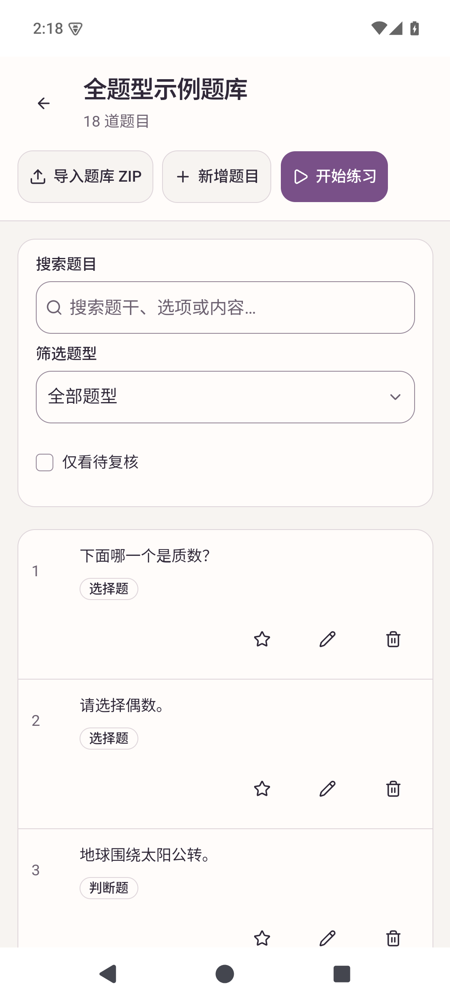
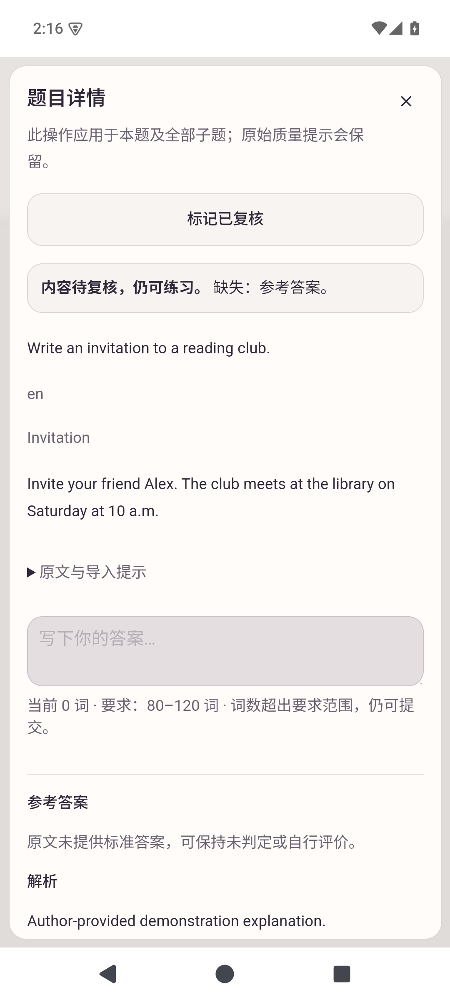
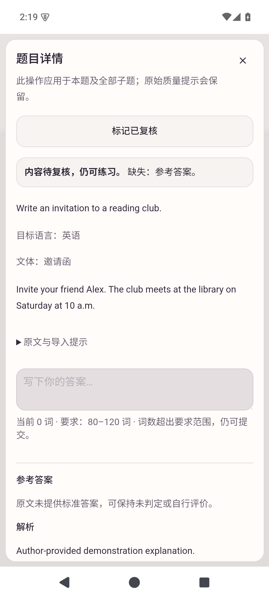
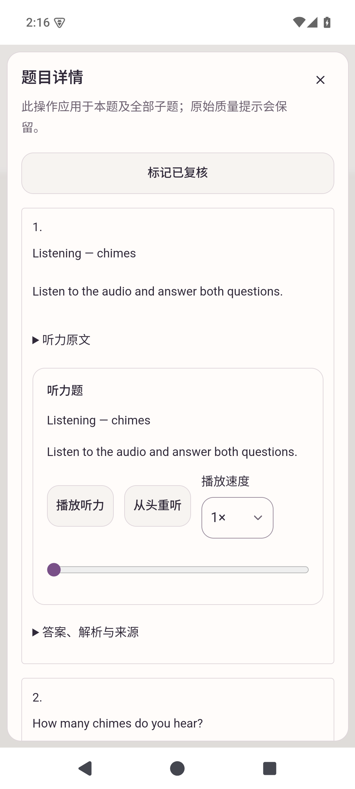
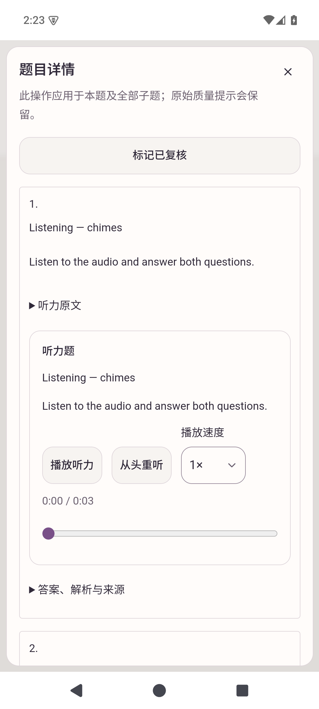
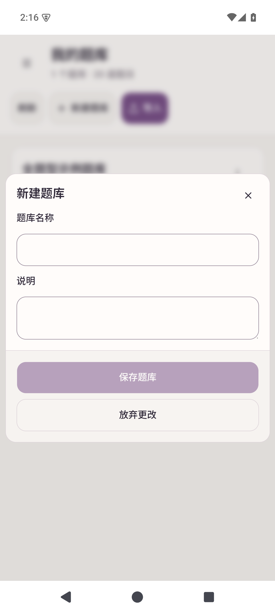
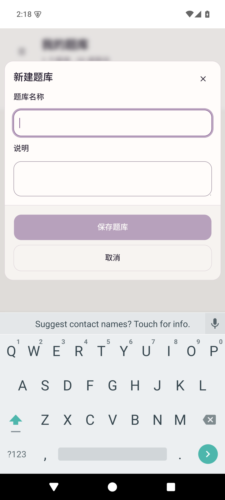
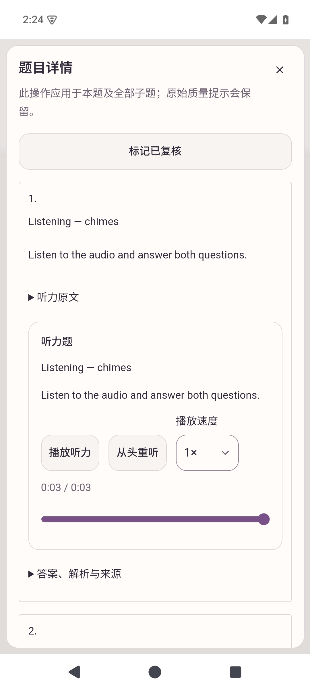
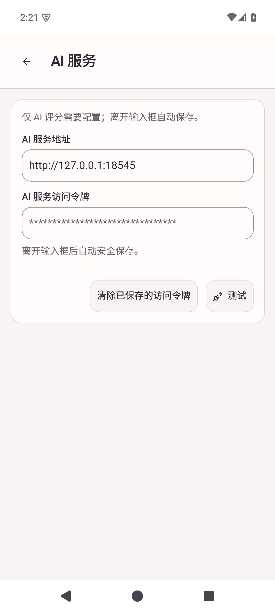

Actual API 35 arm64 disposable AVD. Baselines were captured on preceding scoped candidates using the same example bank. This is visual acceptance, not a controlled layout/performance benchmark.








